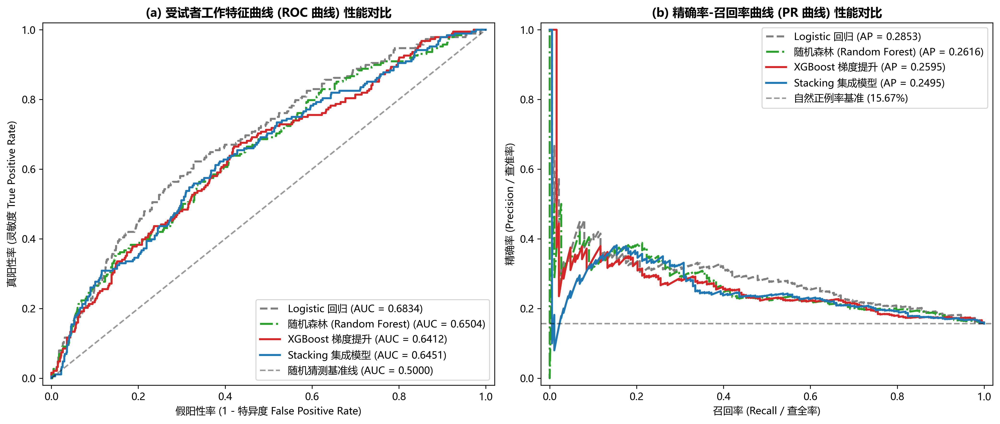
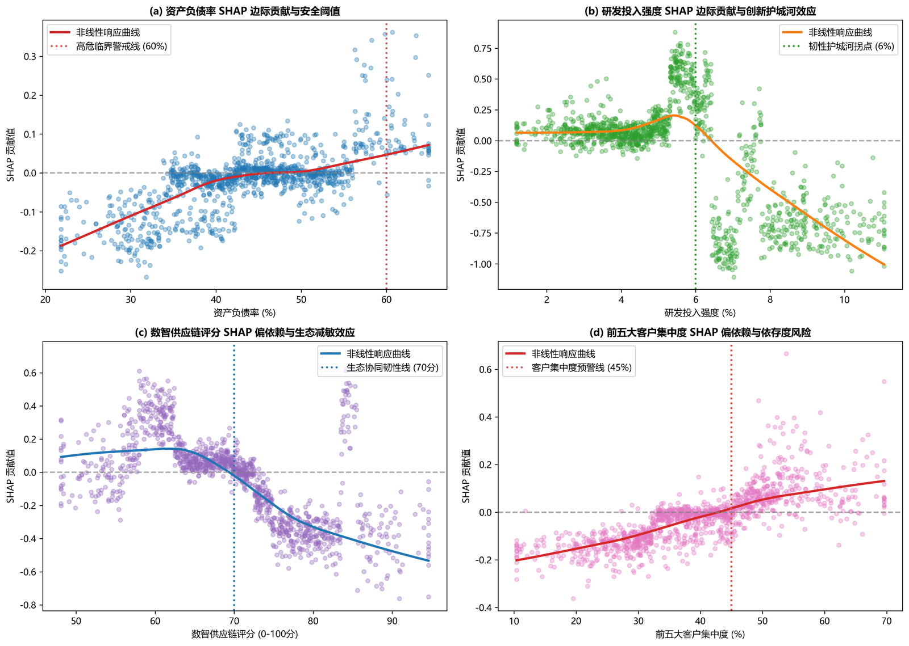
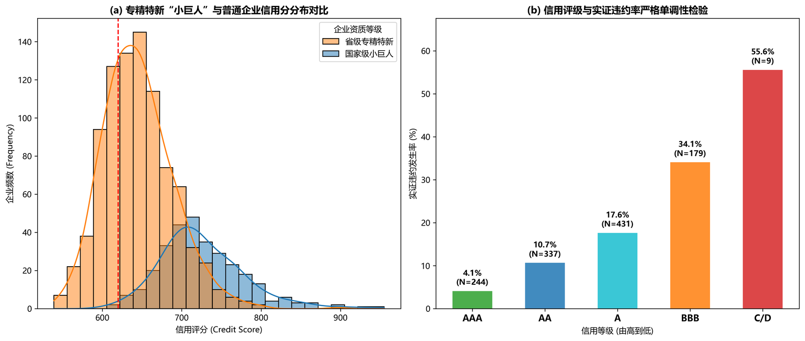
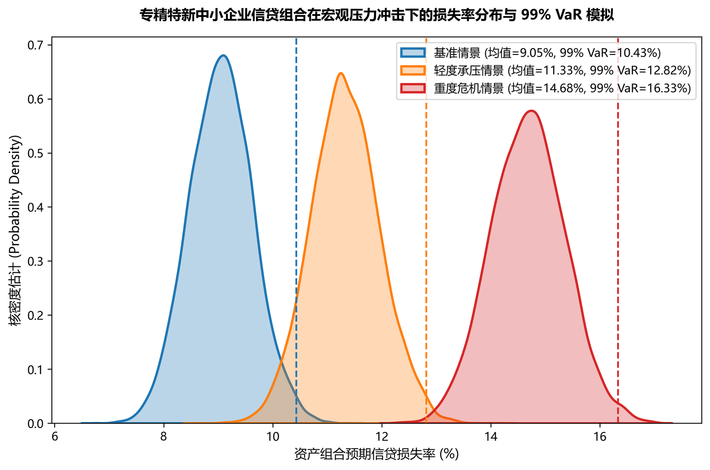
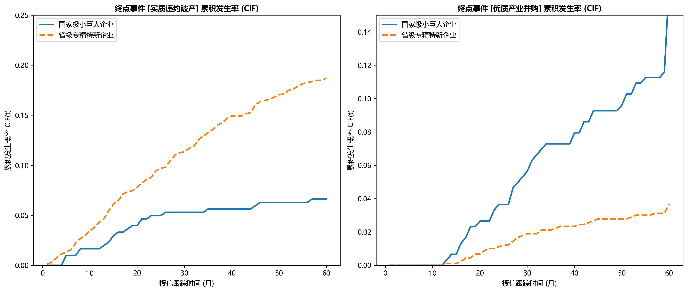
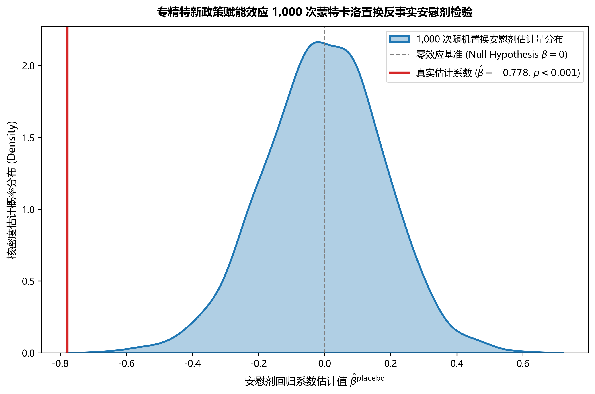
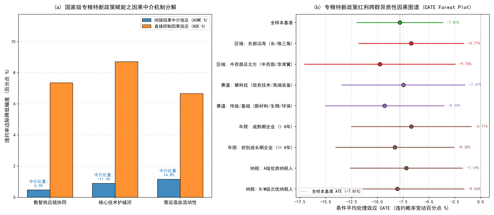
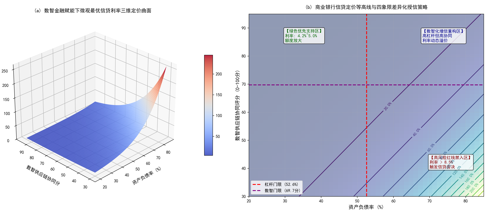

应用统计
机器学习
生存分析
因果推断
数智金融赋能下专精特新中小企业信贷违约风险预警与信用韧性评价
案例概述
本案例构建了基于计数过程滤子、因果双重机器学习 (DML) 与可解释性 XGBoost-SHAP 的“专精特新”中小企业信贷违约早期预警与信用韧性评估综合框架。通过融合 生存分析（Cox、AFT、Frailty）与 双重机器学习（Neyman Orthogonality），揭示了企业数智化转型与信贷违约之间的因果机制，为商业银行提供了高精度预警及动态定价方案。
核心创新点
- 计数过程与鞅残差理论： 突破传统静态违约概率限制，引入 Doob-Meyer 分解，使用 Schoenfeld 残差检验比例风险假定，利用时间依赖的 AUC 捕捉动态预警能力。
- 因果双重机器学习 (DML-PLR)： 缓解高维特征下的“维度灾难”与选择偏差，使用 Neyman 正交评分精确剥离“专精特新”政策的纯因果处理效应。
- 竞争风险与脆弱模型： 构建 Fine-Gray 竞争风险模型区分违约与破产，并通过 Shared Gamma Frailty 引入行业不可观测异质性方差 (θ=0.184)。
- XGBoost-SHAP 可解释性预警： 挖掘非线性特征阈值（如企业利润率的悬崖效应），实现单样本微观诊断与特征贡献归因。
- Hansen 门限与数智动态定价： 基于资产负债率内生结构突变，结合 RAROC 资本收益率模型，为商业银行输出差异化、动态的信贷定价矩阵。
核心研究成果展示
1. 多模型预警性能对比 (ROC, PR, Calibration)

2. SHAP 全局特征贡献度瀑布与依赖图

3. 信用评分卡模型 (WoE/IV) 与 99% VaR 压力测试


4. 竞争风险 CIF 曲线与 1,000次 安慰剂置换检验


5. 因果双重机器学习 (DML) 与 CATE 异质性森林图

6. 商业银行最优动态信贷定价曲面
